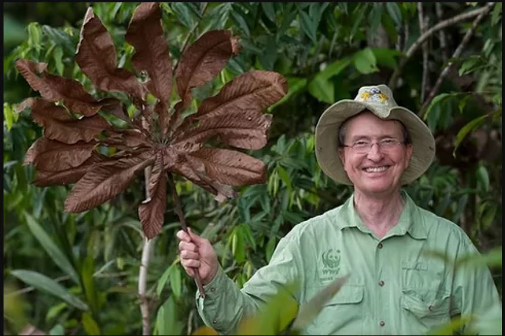
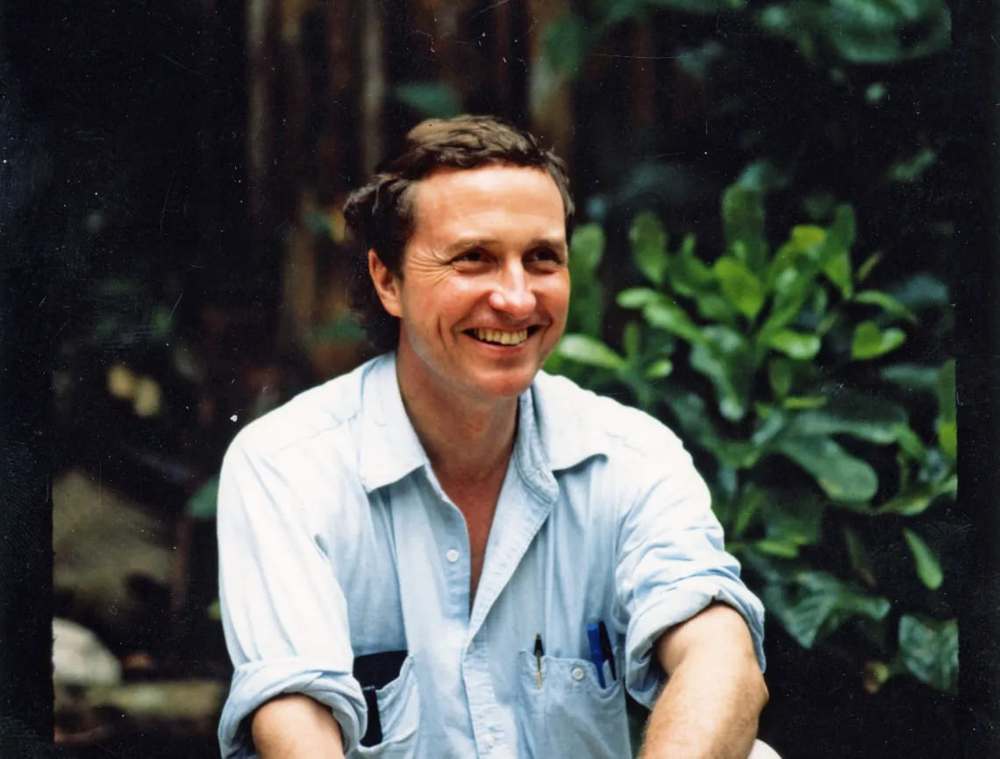
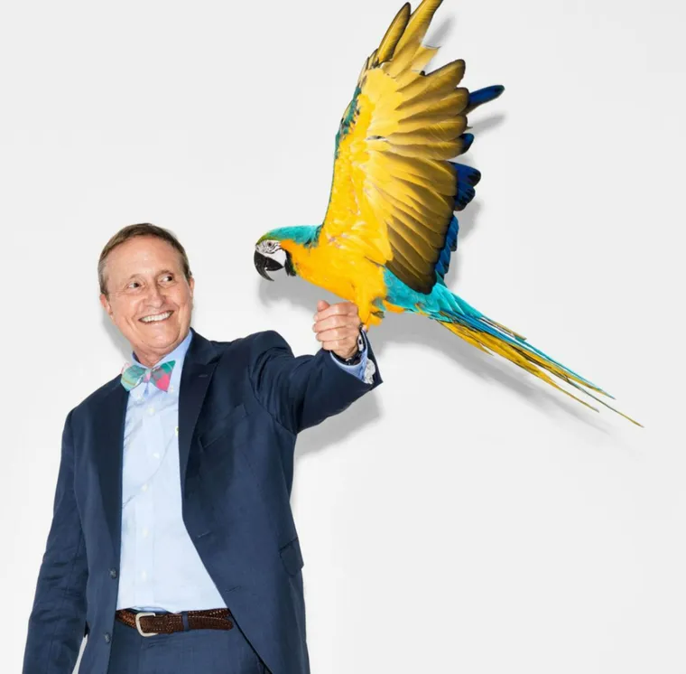
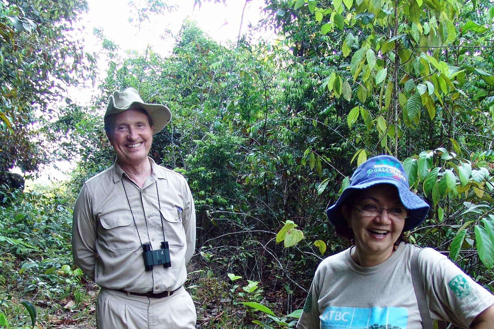
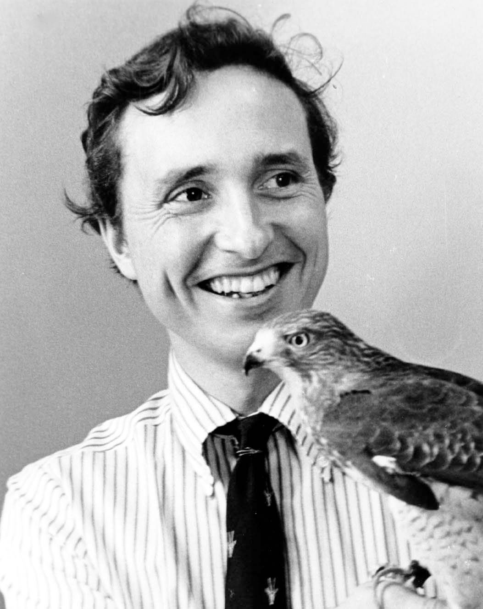
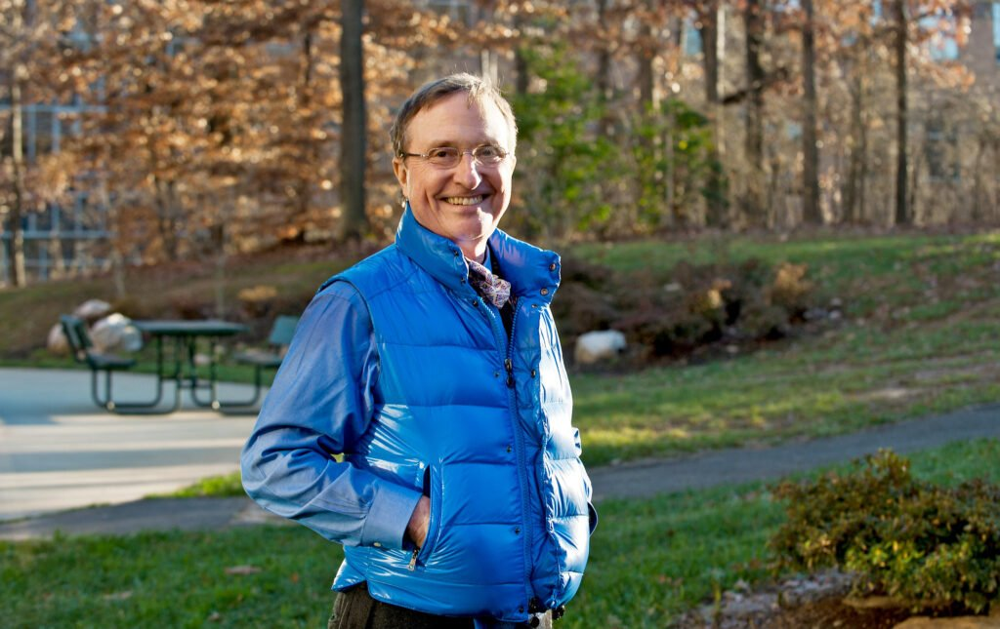

Thomas Lovejoy
Founder and Visionary
1941 – 2021. Scientist, conservationist and creator of the world's largest experiment on forest fragmentation.
A Legacy of Inspiration
The American researcher and environmentalist inspired people, helped train hundreds of new scholars and advocates for sustainable development, influenced decision-makers behind the scenes or in major meetings, and reached the general public, changing the course of history at various moments.
Throughout his career, he was a senior advisor to the United Nations Foundation on biodiversity and environmental science; served on scientific and environmental councils under the Reagan, Bush, and Clinton administrations; was chief biodiversity advisor at the World Bank and lead environmental specialist for Latin America and the Caribbean; and was the special science envoy during the Barack Obama and Joe Biden administrations.

The Science of Minimum Size
A Yale University graduate, Lovejoy first came to the Amazon in 1965 during his doctorate. In the late 70s, he returned and, alongside Richard Bierregaard and in partnership with researchers from the National Institute of Amazonian Research (INPA), created the Biological Dynamics of Forest Fragments Project (BDFFP), initially called "Minimum Critical Size of Ecosystems," one of his greatest legacies in the Amazon.
The result of international cooperation, the large-scale experiment investigates the functioning of forest fragments and the effects of deforestation on "biological diversity", a term coined by Lovejoy and now universally known as "biodiversity".


Nearly 50 Years of History
The BDFFP, his greatest legacy
Among his legacy, a major initiative he left us was the BDFFP. This bold and complex initiative, which turned 46 in 2025, has already trained more than 300 masters and doctors, over 1500 research assistants, hundreds of students in field courses, and dozens of woodsmen who learned much and taught even more.
The BDFFP cataloged thousands of species and recorded countless scientific findings that help understand the consequences of forest fragmentation and the dynamics of tropical forests, with findings that influence researchers worldwide.

years of continuous research
master's and doctoral graduates
research assistants

Recognized Trajectory
Lovejoy's trajectory is recognized by numerous awards and titles. In Brazil, he was awarded the Order of Rio Branco (1988) and the Order of Scientific Merit (1998). At INPA, he received the Rio Negro Honorable Mention (2019), the institute's highest honor.
Shortly before his death, he became a member of the Brazilian Academy of Sciences (ABC) for his immense contribution to Brazilian environmental science. Upon hearing of the honor, Tom said he was very happy and deeply thanked for the distinction.
Watch the documentary about the legacy and vision of Thomas Lovejoy.
Simply, Tom.
Tom, as he was known to those close to him, built more than just a career. He built a family, sparked a passion for Brazil, and shaped generations of people committed to conservation.
In the countryside and in life, he taught us to observe nature and understand our place within it. More than knowledge, he left a way of seeing the world and acting to transform it.
Tom made the world better and left a great legacy.